Numerical Routines: SciPy and NumPy¶
SciPy is a Python library of mathematical routines. Many of the SciPy routines are Python “wrappers”, that is, Python routines that provide a Python interface for numerical libraries and routines originally written in Fortran, C, or C++. Thus, SciPy lets you take advantage of the decades of work that has gone into creating and optimizing numerical routines for science and engineering. Because the Fortran, C, or C++ code that Python accesses is compiled, these routines typically run very fast. Therefore, there is no real downside—no speed penalty—for using Python in these cases.
We have already encountered one of SciPy’s routines, scipy.optimize.leastsq, for fitting nonlinear functions to experimental data, which was introduced in the the chapter on Curve Fitting. Here we will provide a further introduction to a number of other SciPy packages, in particular those on special functions, numerical integration, including routines for numerically solving ordinary differential equations (ODEs), discrete Fourier transforms, linear algebra, and solving non-linear equations. Our introduction to these capabilities does not include extensive background on the numerical methods employed; that is a topic for another text. Here we simply introduce the SciPy routines for performing some of the more frequently required numerical tasks.
One final note: SciPy makes extensive use of NumPy arrays, so NumPy should always be imported with SciPy
Special functions¶
SciPy provides a plethora of special functions, including Bessel functions (and routines for finding their zeros, derivatives, and integrals), error functions, the gamma function, Legendre, Laguerre, and Hermite polynomials (and other polynomial functions), Mathieu functions, many statistical functions, and a number of other functions. Most are contained in the scipy.special library, and each has its own special arguments and syntax, depending on the vagaries of the particular function. We demonstrate a number of them in the code below that produces a plot of the different functions called. For more information, you should consult the SciPy web site on the scipy.special library.

Plots of a few selected special functions
1 2 3 4 5 6 7 8 9 10 11 12 13 14 15 16 17 18 19 20 21 22 23 24 25 26 27 28 29 30 31 32 33 34 35 36 37 38 39 40 41 42 43 44 45 46 47 48 49 50 51 52 53 54 55 56 57 58 59 60 61 62 63 64 65 66 67 68 69 70 71 72 73 74 75 76 77 78 79 80 81 82 83 84 | import numpy as np
import scipy.special
import matplotlib.pyplot as plt
# create a figure window
fig = plt.figure(1, figsize=(9,8))
# create arrays for a few Bessel functions and plot them
x = np.linspace(0, 20, 256)
j0 = scipy.special.jn(0, x)
j1 = scipy.special.jn(1, x)
y0 = scipy.special.yn(0, x)
y1 = scipy.special.yn(1, x)
ax1 = fig.add_subplot(321)
ax1.plot(x,j0, x,j1, x,y0, x,y1)
ax1.axhline(color="grey", ls="--", zorder=-1)
ax1.set_ylim(-1,1)
ax1.text(0.5, 0.95,'Bessel', ha='center', va='top',
transform = ax1.transAxes)
# gamma function
x = np.linspace(-3.5, 6., 3601)
g = scipy.special.gamma(x)
g = np.ma.masked_outside(g, -100, 400)
ax2 = fig.add_subplot(322)
ax2.plot(x,g)
ax2.set_xlim(-3.5, 6)
ax2.axhline(color="grey", ls="--", zorder=-1)
ax2.axvline(color="grey", ls="--", zorder=-1)
ax2.set_ylim(-20, 100)
ax2.text(0.5, 0.95,'Gamma', ha='center', va='top',
transform = ax2.transAxes)
# error function
x = np.linspace(0, 2.5, 256)
ef = scipy.special.erf(x)
ax3 = fig.add_subplot(323)
ax3.plot(x,ef)
ax3.set_ylim(0,1.1)
ax3.text(0.5, 0.95,'Error', ha='center', va='top',
transform = ax3.transAxes)
# Airy function
x = np.linspace(-15, 4, 256)
ai, aip, bi, bip = scipy.special.airy(x)
ax4 = fig.add_subplot(324)
ax4.plot(x,ai, x,bi)
ax4.axhline(color="grey", ls="--", zorder=-1)
ax4.axvline(color="grey", ls="--", zorder=-1)
ax4.set_xlim(-15,4)
ax4.set_ylim(-0.5,0.6)
ax4.text(0.5, 0.95,'Airy', ha='center', va='top',
transform = ax4.transAxes)
# Legendre polynomials
x = np.linspace(-1, 1, 256)
lp0 = np.polyval(scipy.special.legendre(0),x)
lp1 = np.polyval(scipy.special.legendre(1),x)
lp2 = np.polyval(scipy.special.legendre(2),x)
lp3 = np.polyval(scipy.special.legendre(3),x)
ax5 = fig.add_subplot(325)
ax5.plot(x,lp0, x,lp1, x,lp2, x,lp3)
ax5.axhline(color="grey", ls="--", zorder=-1)
ax5.axvline(color="grey", ls="--", zorder=-1)
ax5.set_ylim(-1,1.1)
ax5.text(0.5, 0.9,'Legendre', ha='center', va='top',
transform = ax5.transAxes)
# Laguerre polynomials
x = np.linspace(-5, 8, 256)
lg0 = np.polyval(scipy.special.laguerre(0),x)
lg1 = np.polyval(scipy.special.laguerre(1),x)
lg2 = np.polyval(scipy.special.laguerre(2),x)
lg3 = np.polyval(scipy.special.laguerre(3),x)
ax6 = fig.add_subplot(326)
ax6.plot(x,lg0, x,lg1, x,lg2, x,lg3)
ax6.axhline(color="grey", ls="--", zorder=-1)
ax6.axvline(color="grey", ls="--", zorder=-1)
ax6.set_xlim(-5,8)
ax6.set_ylim(-5,10)
ax6.text(0.5, 0.9,'Laguerre', ha='center', va='top',
transform = ax6.transAxes)
plt.show()
|
The arguments of the different functions depend, of course, on the nature of the particular function. For example, the first argument of the two types of Bessel functions called in lines 10-13 is the so-called order of the Bessel function, and the second argument is the independent variable. The Gamma and Error functions take one argument each and produce one output. The Airy function takes only one input argument, but returns four outputs, which correspond the two Airy functions, normally designated 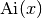 and 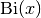, and their derivatives 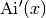 and  . The plot shows only and .
. The plot shows only and .
The polynomial functions shown have a special syntax that uses NumPy’s polyval function for generating polynomials. If p is a list or array of N numbers and x is an array, then
polyval(p, x) = p[0]*x**(N-1) + p[1]*x**(N-2) + ... + p[N-2]*x +
p[N-1]
For example, if p = [2.0, 5.0, 1.0], polyval(p, x) generates the following quadratic polynomial:  .
.
SciPy’s special.legendre(n) and special.laguerre(n) functions output the coefficients p needed in polyval to produce the 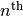-order Legendre and Laguerre polynomials, respectively. The scipy.special library has functions that specify many other polynomial functions in this same way.
Numerical integration¶
When a function cannot be integrated analytically, or is very difficult to integrate analytically, one generally turns to numerical integration methods. SciPy has a number of routines for performing numerical integration. Most of them are found in the same scipy.integrate library. We list them here for reference.
Function Description quad single integration dblquad double integration tplquad triple integration nquad -fold multiple integration
fixed_quad Gaussian quadrature, order n quadrature Gaussian quadrature to tolerance romberg Romberg integration trapz trapezoidal rule cumtrapz trapezoidal rule to cumulatively compute integral simps Simpson’s rule romb Romberg integration polyint Analytical polynomial integration (NumPy function) poly1d Helper function for polyint (NumPy function)
Single integrals¶
The function quad is the workhorse of SciPy’s integration functions. Numerical integration is sometimes called quadrature, hence the name. It is normally the default choice for performing single integrals of a function  over a given fixed range from
over a given fixed range from  to
to 
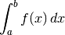
The general form of quad is scipy.integrate.quad(f, a, b), where f is the name of the function to be integrated and a and b are the lower and upper limits, respectively. The routine uses adaptive quadrature methods to numerically evaluate integrals, meaning it successively refines the subintervals (makes them smaller) until a desired level of numerical precision is achieved. For the quad routine, this is about 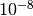, although it usually does even better.
As an example, let’s integrate a Gaussian function over the range from 0 to 1
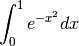
We first need to define the function  , which we do using a lambda expression, and then we call the function quad to perform the integration.
, which we do using a lambda expression, and then we call the function quad to perform the integration.
In [1]: import scipy.integrate
In [2]: f = lambda x : exp(-x**2)
In [3]: scipy.integrate.quad(f, 0, 1)
Out[3]: (0.7468241328124271, 8.291413475940725e-15)
The function call scipy.integrate.quad(f, 0, 1) returns two numbers. The first is 0.7468..., which is the value of the integral, and the second is 8.29...e-15, which is an estimate of the absolute error in the value of the integral, which we see is quite small compared to 0.7468.
Because quad requires a function name as its first argument, we can’t simply use the expression exp(-x**2). On the other hand, we could use the usual def statement to create a normal function, and then use the name of that function in quad. However, it’s simpler here to use a lambda expression. In fact, we can just put the lambda expression directly into the first argument, as illustrated here
In [4]: scipy.integrate.quad(lambda x : exp(-x**2), 0, 1)
Out[4]: (0.7468241328124271, 8.291413475940725e-15)
That works too! We simply use a lambda expression. Hence we see a lambda expression used as an anonymous function, a function with no name, as promised in the section Anonymous functions (lambda).
Note
The quad function accepts positive and negative infinity as limits.
In [5]: scipy.integrate.quad(lambda x : exp(-x**2), 0, inf)
Out[5]: (0.8862269254527579, 7.101318390472462e-09)
In [6]: scipy.integrate.quad(lambda x : exp(-x**2), -inf, 1)
Out[6]: (1.6330510582651852, 3.669607414547701e-11)
The quad function handles infinite limits just fine. The absolute errors are somewhat larger but still well within acceptable bounds for practical work.
The quad function can integrate standard predefined NumPy functions of a single variable, like exp, sin, and cos.
In [7]: scipy.integrate.quad(exp, 0, 1)
Out[7]: (1.7182818284590453, 1.9076760487502457e-14)
In [8]: scipy.integrate.quad(sin, -0.5, 0.5)
Out[8]: (0.0, 2.707864644566304e-15)
In [9]: scipy.integrate.quad(cos, -0.5, 0.5)
Out[9]: (0.9588510772084061, 1.0645385431034061e-14)
Let’s integrate the first order Bessel function of the first kind, usually denoted  , over the interval from 0 to 5. Here is how we do it, using scipy.special.jn(v,x) where v is the (real) order of the Bessel function:
, over the interval from 0 to 5. Here is how we do it, using scipy.special.jn(v,x) where v is the (real) order of the Bessel function:
In [10]: import scipy.special
In [11]: scipy.integrate.quad(lambda x: scipy.special.jn(1,x),0,5)
Out[11]: (1.177596771314338, 1.8083362065765924e-14)
Because the SciPy function scipy.special.jn(v, x) is a function of two variables, v and x, we cannot use the function name scipy.special.jn in quad. So we use a lambda expression, which is a function of only one variable, x, because we have set the v argument equal to 1.
Integrating polynomials¶
Working in concert with the NumPy poly1d, the NumPy function polyint takes the antiderivative of a polynomial and can be used to evaluate definite integrals. The function poly1d essentially does the same thing as polyval that we encountered in the section Special functions, but with a different syntax. Suppose we want to make the polynomial function  . Then we write
. Then we write
In [12]: p = np.poly1d([2, 5, 1])
In [13]: p
Out[13]: poly1d([2, 5, 1])
The polynomial is evaluated using the syntax p(x). Below, we evaluate the polynomial at three different values of x.
In [14]: p(1), p(2), p(3.5)
Out[14]: (8, 19, 43.0)
Thus polyval allows us to define the function . Now the antiderivative of is 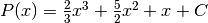 where  is the integration constant. The NumPy function polyint, which takes the antiderivative of a polynomial, works as follows
is the integration constant. The NumPy function polyint, which takes the antiderivative of a polynomial, works as follows
In [15]: P = polyint(p)
In [16]: P
Out[16]: poly1d([ 0.66666667, 2.5 , 1. , 0. ])
When polyint has a single input, p is this case, polyint returns the coefficients of the antiderivative with the integration constant set to zero, as Out[16] illustrates. It is then an easy matter to determine any definite integral of the polynomial since

For example, if  and
and  ,
,
In [17]: q=P(5)-P(1)
In [18]: q
Out[18]: 146.66666666666666
or

Double integrals¶
The scipy.integrate function dblquad can be used to numerically evaluate double integrals of the form

The general form of dblquad is
scipy.integrate.dblquad(func, a, b, gfun, hfun)
where func if the name of the function to be integrated, a and b are the lower and upper limits of the x variable, respectively, and gfun and hfun are the names of the functions that define the lower and upper limits of the y variable.
As an example, let’s perform the double integral

We define the functions f, g, and h, using lambda expressions. Note that even if g, and h are constants, as they may be in many cases, they must be defined as functions, as we have done here for the lower limit.
In [19]: f = lambda x, y : 16*x*y
In [20]: g = lambda x : 0
In [21]: h = lambda y : sqrt(1-4*y**2)
In [22]: scipy.integrate.dblquad(f, 0, 0.5, g, h)
Out[22]: (0.5, 5.551115123125783e-15)
Once again, there are two outputs: the first is the value of the integral and the second is its absolute uncertainty.
Of course, the lower limit can also be a function of  , as we demonstrate here by performing the integral
, as we demonstrate here by performing the integral

The code for this is given by
In [23]: g = lambda y : 1-2*y
In [24]: scipy.integrate.dblquad(f, 0, 0.5, g, h)
Out[24]: (0.33333333333333326, 3.700743415417188e-15)
Other integration routines¶
In addition to the routines described above, scipy.integrate has a number of other integration routines, including nquad, which performs -fold multiple integration, as well as other routines that implement other integration algorithms. You will find, however, that quad and dblquad meet most of your needs for numerical integration.
Solving ODEs¶
The scipy.integrate library has two powerful powerful routines, ode and odeint, for numerically solving systems of coupled first order ordinary differential equations (ODEs). While ode is more versatile, odeint (ODE integrator) has a simpler Python interface works very well for most problems. It can handle both stiff and non-stiff problems. Here we provide an introduction to odeint.
A typical problem is to solve a second or higher order ODE for a given set of initial conditions. Here we illustrate using odeint to solve the equation for a driven damped pendulum. The equation of motion for the angle  that the pendulum makes with the vertical is given by
that the pendulum makes with the vertical is given by

where  is time,
is time,  is the quality factor,
is the quality factor,  is the forcing amplitude, and
is the forcing amplitude, and  is the driving frequency of the forcing. Reduced variables have been used such that the natural (angular) frequency of oscillation is 1. The ODE is nonlinear owing to the 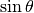 term. Of course, it’s precisely because there are no general methods for solving nonlinear ODEs that one employs numerical techniques, so it seems appropriate that we illustrate the method with a nonlinear ODE.
is the driving frequency of the forcing. Reduced variables have been used such that the natural (angular) frequency of oscillation is 1. The ODE is nonlinear owing to the 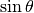 term. Of course, it’s precisely because there are no general methods for solving nonlinear ODEs that one employs numerical techniques, so it seems appropriate that we illustrate the method with a nonlinear ODE.
The first step is always to transform any -order ODE into a system of first order ODEs of the form:

We also need initial conditions, one for each variable  . Here we have a second order ODE so we will have two coupled ODEs and two initial conditions.
. Here we have a second order ODE so we will have two coupled ODEs and two initial conditions.
We start by transforming our second order ODE into two coupled first order ODEs. The transformation is easily accomplished by defining a new variable  . With this definition, we can rewrite our second order ODE as two coupled first order ODEs:
. With this definition, we can rewrite our second order ODE as two coupled first order ODEs:

In this case the functions on the right hand side of the equations are
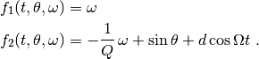
Note that there are no explicit derivatives on the right hand side of the functions  ; they are all functions of and the various , in this case and
; they are all functions of and the various , in this case and  .
.
The initial conditions specify the values of and at  .
.
SciPy’s ODE solver scipy.integrate.odeint has three required arguments and many optional keyword arguments, of which we only need one, args, for this example. So in this case, odeint has the form
odeint(func, y0, t, args=())
The first argument func is the name of a Python function that returns a list of values of the functions 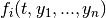 at a given time . The second argument y0 is an array (or list) of the values of the initial conditions of  . The third argument is the array of times at which you want odeint to return the values of . The keyword argument args is a tuple that is used to pass parameters (besides y0 and t) that are needed to evaluate func. Our example should make all of this clear.
. The third argument is the array of times at which you want odeint to return the values of . The keyword argument args is a tuple that is used to pass parameters (besides y0 and t) that are needed to evaluate func. Our example should make all of this clear.
After having written the -order ODE as a system of first-order ODEs, the next task is to write the function func. The function func should have three arguments: (1) the list (or array) of current y values, the current time t, and a list of any other parameters params needed to evaluate func. The function func returns the values of the derivatives 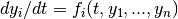 in a list (or array). Lines 5-11 illustrate how to write func for our example of a driven damped pendulum. Here we name the function simply f, which is the name that appears in the call to odeint in line 33 below.
The only other tasks remaining are to define the parameters needed in the function, bundling them into a list (see line 22 below), and to define the initial conditions, and bundling them into another list (see line 25 below). After defining the time array in lines 28-30, the only remaining task is to call odeint with the appropriate arguments and a variable, psoln in this case to store output. The output psoln is an element array where each element is itself an array corresponding the the values of for each time in the time t array that was an argument of odeint. For this example, the first element psoln[:,0] is the  or theta array, and the second element psoln[:,1] is the
or theta array, and the second element psoln[:,1] is the  or omega array. The remainder of the code simply plots out the results in different formats. The resulting plots are shown in the figure Pendulum trajectory after the code.
or omega array. The remainder of the code simply plots out the results in different formats. The resulting plots are shown in the figure Pendulum trajectory after the code.
1 2 3 4 5 6 7 8 9 10 11 12 13 14 15 16 17 18 19 20 21 22 23 24 25 26 27 28 29 30 31 32 33 34 35 36 37 38 39 40 41 42 43 44 45 46 47 48 49 50 51 52 53 54 55 56 57 58 59 | import numpy as np
import matplotlib.pyplot as plt
from scipy.integrate import odeint
def f(y, t, params):
theta, omega = y # unpack current values of y
Q, d, Omega = params # unpack parameters
derivs = [omega, # list of dy/dt=f functions
-omega/Q + np.sin(theta) + d*np.cos(Omega*t)]
return derivs
# Parameters
Q = 2.0 # quality factor (inverse damping)
d = 1.5 # forcing amplitude
Omega = 0.65 # drive frequency
# Initial values
theta0 = 0.0 # initial angular displacement
omega0 = 0.0 # initial angular velocity
# Bundle parameters for ODE solver
params = [Q, d, Omega]
# Bundle initial conditions for ODE solver
y0 = [theta0, omega0]
# Make time array for solution
tStop = 200.
tInc = 0.05
t = np.arange(0., tStop, tInc)
# Call the ODE solver
psoln = odeint(f, y0, t, args=(params,))
# Plot results
fig = plt.figure(1, figsize=(8,8))
# Plot theta as a function of time
ax1 = fig.add_subplot(311)
ax1.plot(t, psoln[:,0])
ax1.set_xlabel('time')
ax1.set_ylabel('theta')
# Plot omega as a function of time
ax2 = fig.add_subplot(312)
ax2.plot(t, psoln[:,1])
ax2.set_xlabel('time')
ax2.set_ylabel('omega')
# Plot omega vs theta
ax3 = fig.add_subplot(313)
twopi = 2.0*np.pi
ax3.plot(psoln[:,0]%twopi, psoln[:,1], '.', ms=1)
ax3.set_xlabel('theta')
ax3.set_ylabel('omega')
ax3.set_xlim(0., twopi)
plt.tight_layout()
plt.show()
|
Pendulum trajectory
The plots above reveal that for the particular set of input parameters chosen, Q = 2.0, d = 1.5, and Omega = 0.65, the pendulum trajectories are chaotic. Weaker forcing (smaller ) leads to what is perhaps the more familiar behavior of sinusoidal oscillations with a fixed frequency which, at long times, is equal to the driving frequency.
Discrete (fast) Fourier transforms¶
The SciPy library has a number of routines for performing discrete Fourier transforms. Before delving into them, we provide a brief review of Fourier transforms and discrete Fourier transforms.
Continuous and discrete Fourier transforms¶
The Fourier transform of a function  is given by
is given by
(1)
where  is the Fourier transform variable; if is time, then is frequency. The inverse transform is given by
is the Fourier transform variable; if is time, then is frequency. The inverse transform is given by
(2)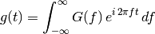
Here we define the Fourier transform in terms of the frequency rather than the angular frequency  .
.
The conventional Fourier transform is defined for continuous functions, or at least for functions that are dense and thus have an infinite number of data points. When doing numerical analysis, however, you work with discrete data sets, that is, data sets defined for a finite number of points. The discrete Fourier transform (DFT) is defined for a function 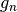 consisting of a set of  discrete data points. Those data points must be defined at equally-spaced times 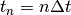 where
discrete data points. Those data points must be defined at equally-spaced times 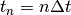 where  is the time between successive data points and runs from 0 to
is the time between successive data points and runs from 0 to  . The discrete Fourier transform (DFT) of is defined as
. The discrete Fourier transform (DFT) of is defined as
(3)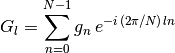
where  runs from 0 to . The inverse discrete Fourier transform (iDFT) is defined as
runs from 0 to . The inverse discrete Fourier transform (iDFT) is defined as
(4)
The DFT is usually implemented on computers using the well-known Fast Fourier Transform (FFT) algorithm, generally credited to Cooley and Tukey who developed it at AT&T Bell Laboratories during the 1960s. But their algorithm is essentially one of many independent rediscoveries of the basic algorithm dating back to Gauss who described it as early as 1805.
The SciPy FFT library¶
The SciPy library scipy.fftpack has routines that implement a souped-up version of the FFT algorithm along with many ancillary routines that support working with DFTs. The basic FFT routine in scipy.fftpack is appropriately named fft. The program below illustrates its use, along with the plots that follow.
import numpy as np
from scipy import fftpack
import matplotlib.pyplot as plt
width = 2.0
freq = 0.5
t = np.linspace(-10, 10, 101) # linearly space time array
g = np.exp(-np.abs(t)/width) * np.sin(2.0*np.pi*freq*t)
dt = t[1]-t[0] # increment between times in time array
G = fftpack.fft(g) # FFT of g
f = fftpack.fftfreq(g.size, d=dt) # frequenies f[i] of g[i]
f = fftpack.fftshift(f) # shift frequencies from min to max
G = fftpack.fftshift(G) # shift G order to coorespond to f
fig = plt.figure(1, figsize=(8,6), frameon=False)
ax1 = fig.add_subplot(211)
ax1.plot(t, g)
ax1.set_xlabel('t')
ax1.set_ylabel('g(t)')
ax2 = fig.add_subplot(212)
ax2.plot(f, np.real(G), color='dodgerblue', label='real part')
ax2.plot(f, np.imag(G), color='coral', label='imaginary part')
ax2.legend()
ax2.set_xlabel('f')
ax2.set_ylabel('G(f)')
plt.show()
Function and its DFT  .
.
The DFT has real and imaginary parts, both of which are plotted in the figure.
The fft function returns the Fourier components of  starting with the zero-frequency component
starting with the zero-frequency component  and progressing to the maximum positive frequency component 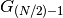 (or 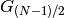 if is odd). From there, fft returns the maximum negative component
and progressing to the maximum positive frequency component 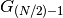 (or 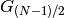 if is odd). From there, fft returns the maximum negative component  (or if is odd) and continues upward in frequency until it reaches the minimum negative frequency component 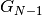. This is the standard way that DFTs are ordered by most numerical DFT packages. The scipy.fftpack function fftfreq creates the array of frequencies in this non-intuitive order such that f[n] in the above routine is the correct frequency for the Fourier component G[n]. The arguments of fftfreq are the size of the the orignal array g and the keyword argument d that is the spacing between the (equally spaced) elements of the time array (d=1 if left unspecified). The package scipy.fftpack provides the convenience function fftshift that reorders the frequency array so that the zero-frequency occurs at the middle of the array, that is, so the frequencies proceed monotonically from smallest (most negative) to largest (most positive). Applying fftshift to both f and G puts the frequencies f in ascending order and shifts G so that the frequency of G[n] is given by the shifted f[n].
(or if is odd) and continues upward in frequency until it reaches the minimum negative frequency component 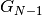. This is the standard way that DFTs are ordered by most numerical DFT packages. The scipy.fftpack function fftfreq creates the array of frequencies in this non-intuitive order such that f[n] in the above routine is the correct frequency for the Fourier component G[n]. The arguments of fftfreq are the size of the the orignal array g and the keyword argument d that is the spacing between the (equally spaced) elements of the time array (d=1 if left unspecified). The package scipy.fftpack provides the convenience function fftshift that reorders the frequency array so that the zero-frequency occurs at the middle of the array, that is, so the frequencies proceed monotonically from smallest (most negative) to largest (most positive). Applying fftshift to both f and G puts the frequencies f in ascending order and shifts G so that the frequency of G[n] is given by the shifted f[n].
The scipy.fftpack module also contains routines for performing 2-dimensional and -dimensional DFTs, named fft2 and fftn, respectively, using the FFT algorithm.
As for most FFT routines, the scipy.fftpack FFT routines are most efficient if is a power of 2. Nevertheless, the FFT routines are able to handle data sets where is not a power of 2.
scipy.fftpack also supplies an inverse DFT function ifft. It is written to act on the unshifted FFT so take care! Note also that ifft returns a complex array. Because of machine roundoff error, the imaginary part of the function returned by ifft will, in general, be very near zero but not exactly zero even when the original function is a purely real function.
Linear algebra¶
Python’s mathematical libraries, NumPy and SciPy, have extensive tools for numerically solving problems in linear algebra. Here we focus on two problems that arise commonly in scientific and engineering settings: (1) solving a system of linear equations and (2) eigenvalue problems. In addition, we also show how to perform a number of other basic computations, such as finding the determinant of a matrix, matrix inversion, and  decomposition. The SciPy package for linear algebra is called scipy.linalg.
decomposition. The SciPy package for linear algebra is called scipy.linalg.
Basic computations in linear algebra¶
SciPy has a number of routines for performing basic operations with matrices. The determinant of a matrix is computed using the scipy.linalg.det function:
In [1]: import scipy.linalg
In [2]: a = array([[-2, 3], [4, 5]])
In [3]: a
Out[4]: array([[-2, 3],
[ 4, 5]])
In [5]: scipy.linalg.det(a)
Out[5]: -22.0
The inverse of a matrix is computed using the scipy.linalg.inv function, while the product of two matrices is calculated using the NumPy dot function:
In [6]: b = scipy.linalg.inv(a)
In [6]: b
Out[6]: array([[-0.22727273, 0.13636364],
[ 0.18181818, 0.09090909]])
In [7]: dot(a,b)
Out[7]: array([[ 1., 0.],
[ 0., 1.]])
Solving systems of linear equations¶
Solving systems of equations is nearly as simple as constructing a coefficient matrix and a column vector. Suppose you have the following system of linear equations to solve:
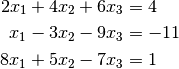
The first task is to recast this set of equations as a matrix equation of the form  . In this case, we have:
. In this case, we have:

Next we construct the array  and vector
and vector  as NumPy arrays:
as NumPy arrays:
In [8]: A = array([[2, 4, 6], [1, -3, -9], [8, 5, -7]])
In [9]: b = array([4, -11, 2])
Finally we use the SciPy function scipy.linalg.solve to find  ,
,  , and
, and  .
.
In [10]: scipy.linalg.solve(A,b)
Out[10]: array([ -8.91304348, 10.2173913 , -3.17391304])
which gives the results: 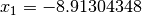,  , and
, and  . Of course, you can get the same answer by noting that
. Of course, you can get the same answer by noting that  . Following this approach, we can use the scipy.linalg.inv introduced in the previous section:
. Following this approach, we can use the scipy.linalg.inv introduced in the previous section:
Ainv = scipy.linalg.inv(A)
In [10]: dot(Ainv, b)
Out[10]: array([ -8.91304348, 10.2173913 , -3.17391304])
which is the same answer we obtained using scipy.linalg.solve. Using scipy.linalg.solve is numerically more stable and a faster than using , so it is the preferred method for solving systems of equations.
You might wonder what happens if the system of equations are not all linearly independent. For example if the matrix is given by
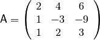
where the third row is a multiple of the first row. Let’s try it out and see what happens. First we change the bottom row of the matrix and then try to solve the system as we did before.
In [11]: A[2] = array([1, 2, 3])
In [12]: A
Out[12]: array([[ 2, 4, 6],
[ 1, -3, -9],
[ 1, 2, 3]])
In [13]: scipy.linalg.solve(A,b)
LinAlgError: Singular matrix
In [14]: Ainv = scipy.linalg.inv(A)
LinAlgError: Singular matrix
Whether we use scipy.linalg.solve or scipy.linalg.inv, SciPy raises an error because the matrix is singular.
Eigenvalue problems¶
One of the most common problems in science and engineering is the eigenvalue problem, which in matrix form is written as

where is a square matrix,  is a column vector, and
is a column vector, and  is a scalar (number). Given the matrix , the problem is to find the set of eigenvectors and their corresponding eigenvalues that solve this equation.
is a scalar (number). Given the matrix , the problem is to find the set of eigenvectors and their corresponding eigenvalues that solve this equation.
We can solve eigenvalue equations like this using scipy.linalg.eig. the outputs of this function is an array whose entries are the eigenvalues and a matrix whose rows are the eigenvectors. Let’s return to the matrix we were using previously and find its eigenvalues and eigenvectors.
A = array([[2, 4, 6],[1, -3, -9],[8, 5, -7]])
In [15]: A
Out[15]: array([[ 2, 4, 6],
[ 1, -3, -9],
[ 8, 5, -7]])
In [16]: lam, evec = scipy.linalg.eig(A)
In [17]: lam
Out[17]: array([ 2.40995356+0.j, -8.03416016+0.j,
-2.37579340+0.j])
In [18]: evec
Out[18]: array([[-0.77167559, -0.52633654, 0.57513303],
[ 0.50360249, 0.76565448, -0.80920669],
[-0.38846018, 0.36978786, 0.12002724]])
The first eigenvalue and its corresponding eigenvector are given by
In [19]: lam[0]
Out[19]: (2.4099535647625494+0j)
In [20]: evec[:,0]
Out[20]: array([-0.77167559, 0.50360249, -0.38846018])
We can check that they satisfy the 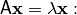
In [21]: dot(A,evec[:,0])
Out[21]: array([-1.85970234, 1.21365861, -0.93617101])
In [22]: lam[0]*evec[:,0]
Out[22]: array([-1.85970234+0.j, 1.21365861+0.j,
-0.93617101+0.j])
Thus we see by direct substitution that the left and right sides of are equal. In general, the eigenvalues can be complex, so their values are reported as complex numbers.
Generalized eigenvalue problem¶
The scipy.linalg.eig function can also solve the generalized eigenvalue problem

where 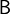 is a square matrix with the same size as . Suppose, for example, that we have
In [22]: A = array([[2, 4, 6], [1, -3, -9], [8, 5, -7]])
Out[22]: B = array([[5, 9, 1], [-3, 1, 6], [4, 2, 8]])
Then we can solve the generalized eigenvalue problem by entering as the optional second argument to scipy.linalg.eig
In [23]: lam, evec = scipy.linalg.eig(A,B)
The solutions are returned in the same fashion as before, as an array lam whose entries are the eigenvalues and a matrix evac whose rows are the eigenvectors.
In [24]: lam
Out[24]: array([-1.36087907+0.j, 0.83252442+0.j,
-0.10099858+0.j])
In [25]: evec
Out[25]: array([[-0.0419907 , -1. , 0.93037493],
[-0.43028153, 0.17751302, -1. ],
[ 1. , -0.29852465, 0.4226201 ]])
Hermitian and banded matrices¶
SciPy has a specialized routine for solving eigenvalue problems for Hermitian (or real symmetric) matrices. The routine for hermitian matrices is scipy.linalg.eigh. It is more efficient (faster and uses less memory) than scipy.linalg.eig. The basic syntax of the two routines is the same, although some of the optional arguments are different. Both routines can solve generalized as well as standard eigenvalue problems.
SciPy also has a specialized routine scipy.linalg.eig_banded for solving eigenvalue problems for real symmetric or complex hermitian banded matrices.
Solving non-linear equations¶
SciPy has many different routines for numerically solving non-linear equations or systems of non-linear equations. Here we will introduce only a few of these routines, the ones that are relatively simple and appropriate for the most common types of nonlinear equations.
Single equations of a single variable¶
Solving a single nonlinear equation is enormously simpler than solving a system of nonlinear equations, so that is where we start. A word of caution: solving non-linear equations can be a tricky business so it is important that you have a good sense of the behavior of the function you are trying to solve. The best way to do this is to plot the function over the domain of interest before trying to find the solutions. This will greatly assist you in finding the solutions you seek and avoiding spurious solutions.
We begin with a concrete example. Suppose we want to find the solutions to the equation
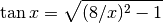
Plots of  and 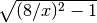 vs
and 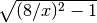 vs  are shown in the top plot in the figure Crossing functions, albeit with replaced by . The solutions to this equation are those values where the two curves and cross each other. The first step towards obtaining a numerical solution is to rewrite the equation to be solved in the form
are shown in the top plot in the figure Crossing functions, albeit with replaced by . The solutions to this equation are those values where the two curves and cross each other. The first step towards obtaining a numerical solution is to rewrite the equation to be solved in the form  . Doing so, the above equation becomes
. Doing so, the above equation becomes
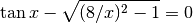
Obviously the two equations above have the same solutions for . Parenthetically we mention that the problem of finding the solutions to equations of the form is often referred to as finding the roots of .
Next, we plot over the domain of interest, in this case from  to 8. We are only interested in positive solutions and for 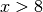, the equation has no real solutions as the argument of the square root becomes negative. The solutions, the points where are indicated by green circles; there are three of them. Another notable feature of the function is that it diverges to
to 8. We are only interested in positive solutions and for 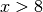, the equation has no real solutions as the argument of the square root becomes negative. The solutions, the points where are indicated by green circles; there are three of them. Another notable feature of the function is that it diverges to  at 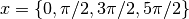.
at 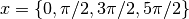.
Roots of a nonlinear function
Brent method¶
One of the workhorses for finding solutions to a single variable nonlinear equation is the method of Brent, discussed in many texts on numerical methods. SciPy’s implementation of the Brent algorithm is the function scipy.optimize.brentq(f, a, b), which has three required arguments. The first f is the name of the user-defined function to be solved. The next two, a and b are the values that bracket the solution you are looking for. You should choose a and b so that there is only one solutions in the interval between a and b. Brent’s method also requires that f(a) and f(b) have opposite signs; an error message is returned if they do not. Thus to find the three solutions to 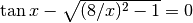, we need to run scipy.optimize.brentq(f, a, b) three times using three different values of a and b that bracket each of the three solutions. The program below illustrates the how to use scipy.optimize.brentq
import numpy as np
import scipy.optimize
import matplotlib.pyplot as plt
def tdl(x):
y = 8./x
return np.tan(x) - np.sqrt(y*y-1.0)
# Find true roots
rx1 = scipy.optimize.brentq(tdl, 0.5, 0.49*np.pi)
rx2 = scipy.optimize.brentq(tdl, 0.51*np.pi, 1.49*np.pi)
rx3 = scipy.optimize.brentq(tdl, 1.51*np.pi, 2.49*np.pi)
rx = np.array([rx1, rx2, rx3])
ry = np.zeros(3)
# print using a list comprehension
print('\nTrue roots:')
print('\n'.join('f({0:0.5f}) = {1:0.2e}'.format(x, tdl(x)) for x in rx))
# Find false roots
rx1f = scipy.optimize.brentq(tdl, 0.49*np.pi, 0.51*np.pi)
rx2f = scipy.optimize.brentq(tdl, 1.49*np.pi, 1.51*np.pi)
rx3f = scipy.optimize.brentq(tdl, 2.49*np.pi, 2.51*np.pi)
rxf = np.array([rx1f, rx2f, rx3f])
# print using a list comprehension
print('\nFalse roots:')
print('\n'.join('f({0:0.5f}) = {1:0.2e}'.format(x, tdl(x)) for x in rxf))
# Plot function and various roots
x = np.linspace(0.7, 8, 128)
y = tdl(x)
# Create masked array for plotting
ymask = np.ma.masked_where(np.abs(y)>20., y)
plt.figure(figsize=(6, 4))
plt.plot(x, ymask)
plt.axhline(color='black')
plt.axvline(x=np.pi/2., color="gray", linestyle='--', zorder=-1)
plt.axvline(x=3.*np.pi/2., color="gray", linestyle='--', zorder=-1)
plt.axvline(x=5.*np.pi/2., color="gray", linestyle='--', zorder=-1)
plt.xlabel(r'$x$')
plt.ylabel(r'$\tan x - \sqrt{(8/x)^2-1}$')
plt.ylim(-8, 8)
plt.plot(rx, ry, 'og', ms=5, label='true roots')
plt.plot(rxf, ry, 'xr', ms=5, label='false roots')
plt.legend(numpoints=1, fontsize='small', loc = 'upper right',
bbox_to_anchor = (0.92, 0.97))
plt.tight_layout()
plt.show()
Running this code generates the following output:
In [1]: run rootbrentq.py
True roots:
f(1.39547) = -6.39e-14
f(4.16483) = -7.95e-14
f(6.83067) = -1.11e-15
False roots:
f(1.57080) = -1.61e+12
f(4.71239) = -1.56e+12
f(7.85398) = 1.16e+12
The Brent method finds the three true roots of the equation quickly and accurately when you provide values for the brackets a and b that are valid. However, like many numerical methods for finding roots, the Brent method can produce spurious roots as it does in the above example when a and b bracket singularities like those at 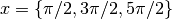. Here we evaluated the function at the purported roots found by brentq to verify that the values of found were indeed roots. For the true roots, the values of the function were very near zero, to within an acceptable roundoff error of less than  . For the false roots, exceedingly large numbers on the order of
. For the false roots, exceedingly large numbers on the order of  were obtained, indicating a possible problem with these roots. These results, together with the plots, allow you to unambiguously identify the true solutions to this nonlinear function.
were obtained, indicating a possible problem with these roots. These results, together with the plots, allow you to unambiguously identify the true solutions to this nonlinear function.
The brentq function has a number of optional keyword arguments that you may find useful. One keyword argument causes brentq to return not only the solution but the value of the function evaluated at the solution. Other arguments allow you to specify a tolerance to which the solution is found as well as a few other parameters possibly of interest. Most of the time, you can leave the keyword arguments at their default values. See the brentq entry online on the SciPy web site for more information.
Other methods for solving equations of a single variable¶
SciPy provides a number of other methods for solving nonlinear equations of a single variable. It has an implementation of the Newton-Raphson method called scipy.optimize.newton. It’s the racecar of such methods; its super fast but less stable that the Brent method. To fully realize its speed, you need to specify not only the function to be solved, but also its first derivative, which is often more trouble than its worth. You can also specify its second derivative, which may further speed up finding the solution. If you do not specify the first or second derivatives, the method uses the secant method, which is usually slower than the Brent method.
Other methods, including the Ridder (scipy.optimize.ridder) and bisection (scipy.optimize.bisect), are also available, although the Brent method is generally superior. SciPy let’s you use your favorite.
Solving systems of nonlinear equations¶
Solving systems of nonlinear equations is not for the faint of heart. It is a difficult problem that lacks any general purpose solutions. Nevertheless, SciPy provides quite an assortment of numerical solvers for nonlinear systems of equations. However, because of the complexity and subtleties of this class of problems, we do not discuss their use here.
Exercises¶
- Use NumPy’s polyval function together with SciPy to plot the following functions:
- The first four Chebyshev polynomials of first kind. Plot these over the interval from -1 to +1.
- The first four Hermite polynomials multiplied by
 . Plot these on the interval from -5 to +5. These are the first four wave functions of the quantum mechanical simple harmonic oscillator.
. Plot these on the interval from -5 to +5. These are the first four wave functions of the quantum mechanical simple harmonic oscillator.